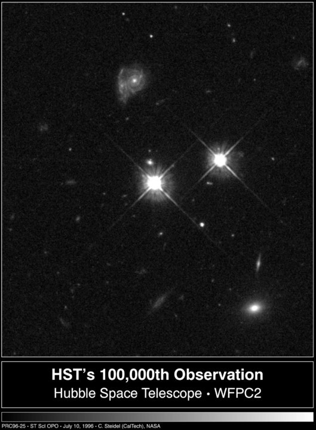

Warp Drives: The Limitless Future
Learn more about how humanity can become the architects of space and time
Light Speed!Imagine standing on a beach on the western spanish coast looking out over the Atlantic ocean. It stretches out as far as the eye can see, way past the horizon. Yet, the part of the ocean you can see is still only a small patch of the entire surface of the Earth. In fact, the part you can see is only one-hundred-thousandth of a percent of the entire surface of the Earth. Least to say, the Earth is ginormous.
Now imagine the seeming impossible. The entire Earth, the ginormous celestial body humanity has lived on their entire live, was shrunk to the size of the button on your shirt. About 8 millimeters. The entire mass of the Earth shrunk to this size would be so dense that the electrons, protons, and neutrons composing the earth would collapse and be forced together, being crushed further and further. The shear amount of mass concentrated in such a small space would bend the trajectory of light, the fastest thing in the universe, to such a drastic extent that the light would become trapped, unable to escape the gravitational pull. Where the Earth once was would appear a black sphere about the size of a peanut. Black, because no light can bounce off of it into our eyes. The universes perfect shadow.
This black sphere, the remnant of a critical gravitational collapse of the Earth, is called a black hole. Black holes don't have a surface like planets or stars, since any matter passing close enough to it would be irrefutably pulled in like a cosmic drain hole. They instead have what is called an event horizon. An event horizon is simply a region of space and time, much like the door between two rooms. Once you pass through the event horizon, like a cosmic penitentiary, you are unable to escape. In fact, not even light can escape the extreme gravity inside the event horizon.
Perhaps to the dismay of the regular non-physicist, black holes are absolutely ubiquitous in the Universe. In fact, they are part of the regular stellar evolution of massive stars and represent their final step of life. Once a massive star burns up all its fuel, like the fizzling out of a big firework, there is no energy left to resist the pull of gravity. With such a massive star, the gravity it generates begins to act against itself. With no more competition, gravity pulls the star further and further, compressing it beyond imaginable densities. Eventually, much like the shrunken Earth, it forms a black hole.
You can see now why black holes are so common in our Universe. The Universe is old and there are stars everwhere! A huge amount of stars have lived and died already and many of them were big enough to form black holes at the end of their life. Astronomers even believe all galaxies we see harbor a supermassive black hole at their center, influencing the motion of stars taking up residence in the galaxy.
The event horizon of the black hole is not the only peculiar feature. Deep inside the black hole, at its very center, lies an even greater mystery.
As one falling into the black hole passes the event horizon, gravity only gets strong and stronger. Remember how not even light can escape from a black hole once it passes the event horizon? Thats because gravity has become so strong it completely overwelms the speed of light, like a sprinter running on a treadmill that is set just a little too fast. Once you go further inside, gravity only gets stronger. There is only one and only one possible destination: the center. The force of gravity here is so unbelievably strong, the mathematics of General Relativity itself breaks down. The place of uncalculable gravity goes by a very special name, the singularity.
Much like how the marching forward of time is an incontestable truth for us outside the black hole, once you enter the domain ruled by the singularity, past the event horizon, the marching forward of space towards the singularity becomes that absolute truth. Space and time quite literally switch roles. The watch on the wrist of the astronaut falling into the black hole is better replaced with a GPS.
Us physicist have no idea what truly happens at the singularity since our math breaks down there. Moreover, we could never truly probe the singularity since they are always hidden behind event horizons and light could never escape it to reach our detectors! This cloaked reality of the singularity goes by the name of Cosmic Censorship, first hypothesis by the famous Roger Penrose however it has yet to be mathematically proven.
The singularity remains a mystery and those who venture to see it could never return to the outside universe. Though there have been many attempts to model what occurs at the singularity, it will be a very long time, if ever, before we truly figure out what lies at the black holes heart.
But the inside of black holes is not the only interesting place. It also has a very unique influence on the environment around it. Material and gas can and do orbit the black hole, sometimes reaching incredible speeds. Due to this ultrafast orbiting matter, the shear friction and viscosity of the material causes it to heat up and glow superbly bright. The black hole causes the material orbiting it to glow so brightly, the light emitted easily outshines entire galaxies. From a single black hole! The black hole literally becomes the brightest thing to exist in the universe.
 This image is my favorite astronomical image ever captured. It shows the shear raw power of black holes in action. The very center bright point is called a quasar. A quasar is created when the nucleus of a galaxy contains a supermassive black hole and material orbiting it heats up, shining extremely brightly. The second bright point to the right of the center is a regular star in the foreground of the quasar. Notice how they appear almost equally bright? However, the central bright point, the quasar, is several billion light years further away than the closer star. Even at that distance, the quasar still almost outshines everything else around it and it takes a star several billion light years closer to us to finally match its intensity. That is unfathomable power.
In my eyes, black holes remain one of the most beautiful things in our universe. They shine as bright as they are mysterious. They break the mathematics we use to describe gravity, despite the fact they are a purely gravitational object! Once all stars in the universe have died out, they will be the sole residence. Though eventually, owing to the complicated physical processes, they too will perish.
Learn more about how humanity can become the architects of space and time
Light Speed!
See how gravity is fundamentally different from all other forces and why thats a huge problem in physics.
Pull me in